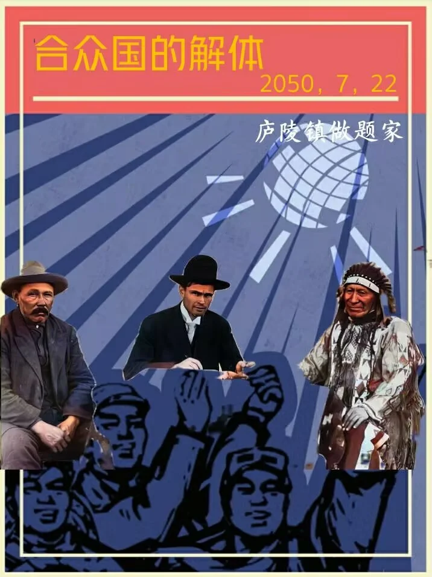

Journal · 2022-07-22
江西省九江市
这天的日记没有留下文字，只有一张照片。
也许是太忙了，也许是那天的事情太过寻常，不值得动笔。又或者恰恰相反——那天发生了什么，让人无从下笔。隔了这么久，我已经不记得了。但照片还在，它替我记得。

No written words remain from this day—only a photograph.
Maybe I was too busy. Maybe that day was so ordinary it didn't seem worth writing about. Or perhaps the opposite—something happened that defied words. After all this time, I no longer remember. But the photo is still here. It remembers for me.
Aucun mot ne reste de ce jour—seulement une photographie.
Peut-être étais-je trop occupé. Peut-être que cette journée était si ordinaire qu'elle ne méritait pas d'être écrite. Ou peut-être le contraire. Après tout ce temps, je ne m'en souviens plus. Mais la photo est toujours là. Elle se souvient pour moi.
Von diesem Tag sind keine Worte geblieben—nur ein Foto.
Vielleicht war ich zu beschäftigt. Vielleicht war der Tag so gewöhnlich, dass er nicht des Schreibens wert schien. Oder vielleicht gerade das Gegenteil. Nach all der Zeit erinnere ich mich nicht mehr. Aber das Foto ist noch da. Es erinnert sich für mich.